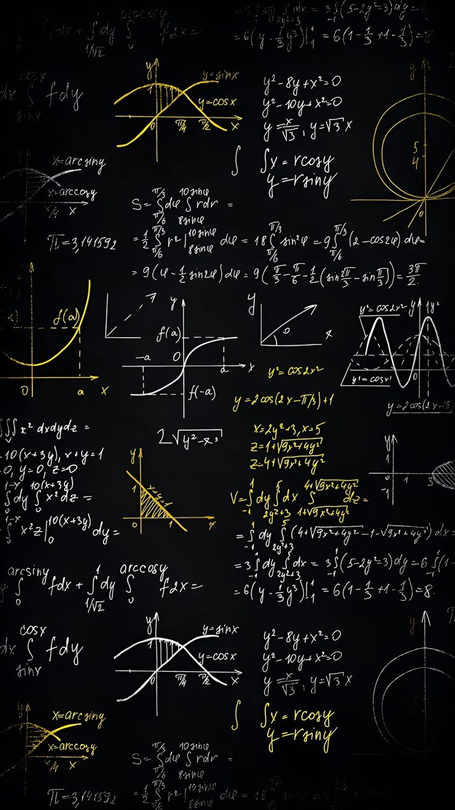

JENIS JENIS FUNGSI KUADRAT
Fungsi Sederhana :
- Bentuk: f(x)=ax2
- Tidak ada koefisien b dan c.
- Contoh: f(x)=2x2

CIRI CIRI FUNGSI KUADRAT

CONTOH SOAL DAN PEMBAHASAN FUNGSI KUADRAT
Udah tau belum kalau fungsi kuadrat itu ada berbagai jenis ada yang dibagi menurut ..., menurut ..., dan menurut ...